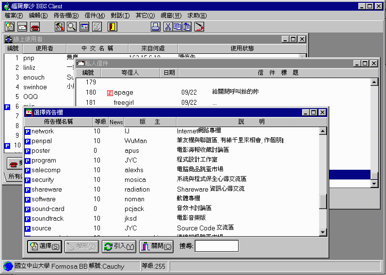

主從式閱覽器為一套與中山Formosa BBS系統完全整合的介面，提供使用者以更方便的視窗環境使用，並期望將帶入另一個多媒體的新世界。
主從式的基本運作方式跟POP3, SMTP, NEWS...等Internet上的服務以類似的溝通方法，我們的則參考之而發展了我們自己的protocol。
Server程式最近更新版本訊息

程式執行畫面
下載最新版本
目前最新的版本為PreRelease12
What's New:
(ultra prerelease 12)
- 1.列出線上使用者的時候加入排序的功能 (build311)
- 2.修正更改密碼時，原先設計不當，無法取消之錯誤 (build312)
- 3.傳送訊息時，如果傳送的訊息是空白就忽略 (build313)
- 4.回顧線上訊息視窗改進為同時顯示收到的和自己送出的訊息，並以顏色區分
(build314)
(ultra prerelease 11)
- 1.修正當收到訊息時，送訊息者ID長度超過12的時候，無法正確回應訊息的問題。
- 2.調整閱讀佈告視窗'精華區'及'上一層'的位置。
- 3.張貼佈告修正為一次最多可以同時張貼至200個版面。
- 4.在線上使用者的地方多個寄信的功能呢
- 5.跳到第幾篇佈告的功能
- 6.可看到web-bbs上線之人數
- 7.修改線上送訊息的功能
- 8.修正版主管理精華區時的諸多bug
(ultra prerelease 10)
- 1.收訊息的視窗略作修改
- 2.修正功能鍵(一)中TAB的順序
- 3.有人call之後 如果他已經離開 會造成client當掉的問題已解決
- 4.修正群組寄信會失敗的bug
- 5.群組寄信增加到上限100人
- 6.新增設定群組寄信功能
- 7.新增安裝介面 使得安裝更方便
- 8.修正連線中斷時 會當機的問題
- 9.新增回顧線上訊息功能
- 10.新增對談時紀錄雙方對談內容的功能
- 11.新增連線時 可以刪除自己屍體的功能
- 12.修正線上即時資訊人數數錯的問題
3/10/97(ultra prerelease 9)
- 1.收到訊息的時候增加音效
- 2.收到訊息時可以直接回訊息
- 3.近站時自動判斷近站公告是否變動過，有的話就自動收取近站公告。
- 4.進入版面時，自動判斷進版畫面是否更動過，有更動過就自動開啟進版畫面。
- 5.修正版主無法轉佈告進精華區的BUG
- 6.ZAP功能改為記錄在Server上，跟telnet的ZAP同步
- 7.支援重要佈告的功能，版主也可將自己版中重要佈告標記
- 8.修正TALK時無法剪貼文章上去的BUG
- 9.新增搜尋佈告的功能，可以分別對作者，日期，佈告標題做搜尋
亦可以限制搜尋範圍為全部，指定編號，或是最近的幾封佈告
而搜尋結果中，刪除，取消刪除，轉寄，轉入精華區等功能均可以多選之後一次處理
2/18/97(Ultra PreRelease 8)
- 1.將HyperLink的呼叫方法稍做修改，使之適用於大部份的Browser。
- 2.修正刪除與取消刪除佈告的BUG
- 3.修正無法取消刪除個人信件的BUG
1/26/97 (Ultra PreRelease 7)
- 1.修改簽名檔後，預防沒有上傳就關閉視窗。
- 2.新增Client<-->Client Talk時可以選用表情。
1/23/97 (Ultra PreRelease 6)
- 1.修復TALK的功能，但是Telnet call Client會沒有回應，此問題應是
Server端造成。
- 2.修正轉寄佈告失敗的錯誤，現在可以正常轉寄一般區和精華區的佈告。
12/26/96 (Ultra PreRelease 5)
- 1.修正著色的BUG
- 2.新增閃爍的功能
- 3.修正Query時的一些小BUG
12/19/96 (Ultra PreRelease 4)
12/14/96 (Ultra PreRelease 3)
12/12/96 (Ultra PreRelease 2)
- 1.修正好友名單無法編輯的問題
- 2.修正無法寄信的問題
- 3.修正及加強閱讀精華區的功能
12/08/96 (Ultra PreRelease 1)
06/12/96 (ver2.3 beta2)
02/02/96 (Ver2.3 beta1)
- 1. 增加讀取精華區階層狀目錄的功能
- 2. 修正一些小bug
12/14/95 (Ver2.2A)
- 1.提供新的閱讀器, 可支援顯示 ANSI 彩色碼字元, 如 佈告, 信件,
簽名檔
, 計劃檔, 查詢對方計劃檔, 進站畫面, 進版畫面
全部皆可鮮示彩色字元.
- 2.提供彩色字元編輯器功能, 可輕易編輯各種彩色文件, 如佈告,
信件, 簽名
檔, 計劃檔, 進站畫面, 由程式自動加入 ANSI 彩色控制碼,
並可預視其顯
示效果...
- 3.支援URL Hyperlink 超連結, 當文章內容包含 http:// ftp:// mailto:
gopher:// news:// telnet:// wais:// 等 URL 超連結時, 會以不同顏色
加上底色來顯示, 此時只要移動滑鼠遊標至其文字上方雙按,
即可自動呼
叫 Netcape WWW Browser 連接至如 Homepage 或直接由程式寄信給對方...
- 4.提供名片簿功能, 可記錄對方E-Mail或帳號, 中文姓名,
以供郵寄信件時,
直接選擇...
- 5.提供簡易列印功能, 可隨時列印佈告或信件等文章內容...
- 6.提供熱鍵, 方便 鍵盤使用者操作...
- 7.More...
10/17/95 (Ver2.1)
- 1.新增 Chatroom 命令功能鍵...
- 2.新增 系統設定 選項, 可直接設定字形,顏色... 等參數
- 3.看佈告或信件可使用 PageUp,PageDown
鍵來捲動內容或看上一篇或是下一篇文章
- 4.修正 傳送佈告 時停頓 Bug...
- 5.修正 "List out of Index" 錯誤訊息 Bug..
- 6.修正對話內容不正常 Block 情形...
- 8.新增 可選擇是否顯示工具列...
- 9.線上對話功能完全更新, 可使用 Copy,Paste 功能...
- 10.新增 對話要求時, 可顯示對方來源,暱名,時間
- 11.自動更新取得最新對話要求...
- 12.新增密碼儲存功能(建議您謹慎選則使用此功能)
- 13.新增程式進入時自動執行 連線視窗...
09/25/95 (Ver2.1)
- 1.使用引言時會將 簽名檔 與空白行濾除...
- 2.閱讀器 可用 Ctrl-C 或 Ctrl-Insert 來 Copy 區塊內容...
- 3.新增加 佈告 取消刪除功能...
- 4.新增加 佈告 修改標題功能...
- 5.新增加 佈告 修改佈告內容功能...
- 6.新增加 信件 取消刪除功能...
- 7.將 閱讀佈告,信件 功能之 作者, 標題, 日期, 編號 縮為一行,以增加文章內容視野...
- 8.新增加 寄信給一群使用者 功能...
- 9.增加跨版貼佈告功能, 最多可將一篇文章同時貼到 5 個討論區...
- 10.新增加閱讀過佈告欄以不同顏色標示
09/17/95 (Ver2.0)
- 1.修正一些錯字
- 2.修正 TAB Set 字行大小
- 3.新增 有新信件 聲音
- 4.修正 一些中止連線 引起的 GPF...
- 5.修正 是否包含引言 選項, 不正常執行...
- 6.避免 因取得佈告選項中, 使得 Scroll Bar 不正反應現象
- 7.修正取得佈告選項中時, 未更正讀取 完成百分比!!
取得最新版本!!
如過你的網路速度很慢，或是不需要安裝介面，可以下載無包裝版，檔案較小。